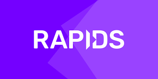
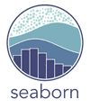

Taher Haggui
Data Scientist


Passionate about mathematics since childhood and eternally curious, I have explored several fields in recent years: industry, manufacturing, logistics before discovering my passion for data science.
I am extremely versatile and passionate about new technologies.
My data science skills cover the areas: Natural Language Processing (NLP), Computer Vision and Time Series.
I have advanced programming skills, especially in python and javascript.
In addition to my computer skills, I have a solid scientific background and a business mindset, allowing me to intervene in the processing of data ranging from small data sets, to massive data (big data) and thus transform data into a real tool.
The tools thus developed make it possible to carry out data projects from the collection of data to the implementation of algorithms, the deployment of solutions and the presentation of results.


| |
 |
 |
 | ||
|  |
| |
|
 |
In financial markets, volatility captures the amount of fluctuation in prices. For trading firms like Optiver, accurately predicting volatility is essential for the trading of options, whose price is directly related to the volatility of the underlying product.In this Kaggle competition,we had built models that predict short-term volatility for hundreds of stocks across different sectors. Our models will be evaluated against real market data collected in the three-month evaluation period after training.
Code sourceCommonLit, Inc., is a nonprofit education technology organization serving over 20 million teachers and students with free digital reading and writing lessons for grades 3-12. Together with Georgia State University, an R1 public research university in Atlanta, they are challenging Kagglers to improve readability rating methods. In this competition, we had built algorithms to rate the complexity of reading passages for grade 3-12 classroom use. To accomplish this, we had used state of the art machine learning tools with a dataset that includes readers from a wide variety of age groups and a large collection of texts taken from various domains.

Retail companies use a variety of methods to assure customers that their products are the cheapest. Among them is product matching, which allows a company to offer products at rates that are competitive to the same product sold by another retailer. Shopee is the leading e-commerce platform in Southeast Asia and Taiwan. Customers appreciate its easy, secure, and fast online shopping experience tailored to their region. The company also provides strong payment and logistical support along with a 'Lowest Price Guaranteed' feature on thousands of Shopee's listed products. In this competition, we had been requested to build a model that predicts which items are the same products for Shopee company.
Jane Street has spent decades developing their own trading models and machine learning solutions to identify profitable opportunities and quickly decide whether to execute trades. These models help Jane Street trade thousands of financial products each day across 200 trading venues around the world. Jane Street challenge us to build our own quantitative trading model to maximize returns using market data from a major global stock exchange. Next, they’ll test the predictiveness of our models against future market returns.
Twitter has become an important communication channel in times of emergency. The ubiquitousness of smartphones enables people to announce an emergency they’re observing in real-time. Because of this, more agencies are interested in programatically monitoring Twitter (i.e. disaster relief organizations and news agencies). In this competition, we’re challenged to build a machine learning model that predicts which Tweets are about real disasters and which one’s aren’t. We had access to a dataset of 10,000 tweets that were hand classified.
Riiid Labs, an AI solutions provider delivering creative disruption to the education market, empowers global education players to rethink traditional ways of learning leveraging AI. With a strong belief in equal opportunity in education, Riiid launched an AI tutor based on deep-learning algorithms in 2017 that attracted more than one million South Korean students. On 2021, the company released EdNet, the world’s largest open database for AI education containing more than 100 million student interactions. In this competition, our challenge is to create algorithms for "Knowledge Tracing," the modeling of student knowledge over time. The goal is to accurately predict how students will perform on future interactions.
Code source
Bengali is the 5th most spoken language in the world with hundreds of million of speakers. It’s the official language of Bangladesh and the second most spoken language in India. Considering its reach, there’s significant business and educational interest in developing AI that can optically recognize images of the language handwritten. This challenge hopes to improve on approaches to Bengali recognition. Bangladesh-based non-profit Bengali.AI is focused on helping to solve this problem. They build and release crowdsourced, metadata-rich datasets and open source them through research competitions. Through this work, Bengali.AI hopes to democratize and accelerate research in Bengali language technologies and to promote machine learning education. For this competition, we’re given the image of a handwritten Bengali grapheme and are challenged to separately classify three constituent elements in the image: grapheme root, vowel diacritics, and consonant diacritics.
Code source Code source
Thankfully, significant investments are being made to improve building efficiencies to reduce costs and emissions. The question is, are the improvements working?
In this competition, we had developed accurate models of metered building energy usage in the following areas: chilled water, electric, hot water, and steam meters. The data comes from over 1,000 buildings over a three-year timeframe. With better estimates of these energy-saving investments, large scale investors and financial institutions will be more inclined to invest in this area to enable progress in building efficiencies.
A question ? Juste Say Hello ?
Send me an email